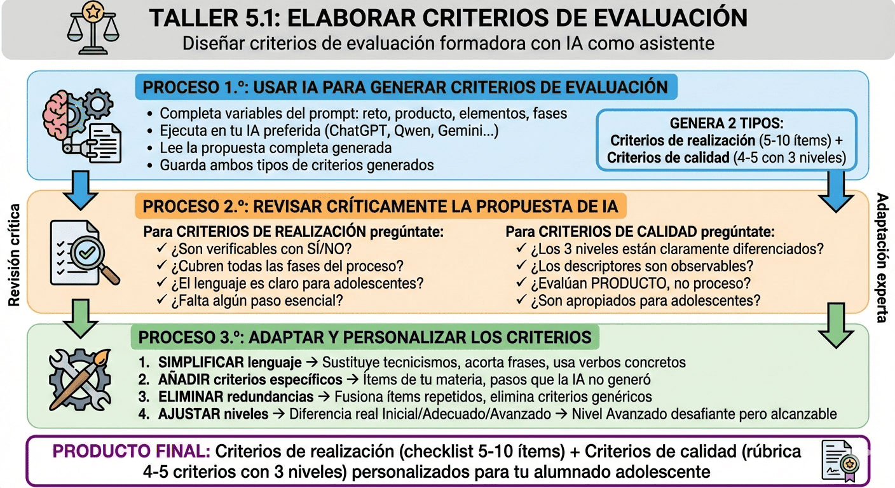

1. Elaborar criterios de evaluación
En esta última actividad creativa, elaboraréis los criterios de evaluación formadora que permitirán a vuestro alumnado autorregular su proceso de aprendizaje. Es preciso diferenciar criterios de realización (¿he completado todos los pasos?) de criterios de calidad (¿lo he hecho bien?). Para ello, completaréis el andamiaje evaluativo esencial para la autonomía del alumnado adolescente.
📌 ELEMENTOS PEDAGÓGICOS EN ESTA ACTIVIDAD:
- Objetivos de aprendizaje y criterios de éxito explícitos (Dylan Wiliam).
- Evaluación formadora: criterios transparentes que el alumnado conoce ANTES de realizar la tarea (Neus Sanmartí). Diferenciación conceptual clave: criterios de realización vs. criterios de calidad .
- IA como asistente pedagógico: genera propuestas estructuradas de criterios que requieren vuestra adaptación experta.
- Andamiaje: tabla-glosario enlazada para consulta rápida de conceptos clave.
- Andamiaje: prompt con variables explícitas para personalización.
- Andamiaje: base de orientación del taller (anticipar, planificar y reducir carga cognitiva).
- Pensamiento crítico: revisión sistemática de propuestas de IA (¿los criterios son realmente observables?, ¿los niveles están bien diferenciados?).
- Producto tangible: al finalizar tendréis criterios de realización (checklist) + criterios de calidad (rúbrica básica) listos para implementar.
Objetivos de la actividad
Al finalizar esta tarea, seréis capaces de:
- Comprender la diferencia entre criterios de realización y criterios de calidad en evaluación formadora.
- Utilizar IA generativa para generar criterios de evaluación estructurados.
- Evaluar críticamente las propuestas de IA.
- Adaptar y personalizar los criterios generados a vuestro alumnado adolescente y contexto específico.
- Producir criterios de evaluación formadora concretos (realización + calidad) listos para integrar en vuestra secuencia didáctica.
Criterios de éxito
Sabréis que habéis completado satisfactoriamente esta actividad cuando:
✓ Hayáis comprendido la diferencia conceptual entre criterios de realización (proceso) y criterios de calidad (resultado).
✓ Hayáis ejecutado el prompt específico personalizando todas las variables con vuestra información real (reto, producto, contexto).
✓ Hayáis revisado críticamente la propuesta de IA: verificabilidad de criterios de realización, diferenciación clara de niveles de calidad, etc.
✓ Hayáis adaptado y personalizado los criterios: modificado redacción, añadido criterios específicos de materia, ajustado niveles de logro.
✓ Tengáis 5-10 criterios de realización (lista de cotejo) + 4-5 criterios de calidad (rúbrica con 3 niveles: Inicial/Adecuado/Avanzado), guardados en formato digital, listos para integrar en vuestra secuencia didáctica.

La actividad se articula en 3 procesos con una lista de cotejo final:
- Proceso 1.º: Usar IA para generar criterios de evaluación
- Proceso 2.º: Revisar críticamente la propuesta de IA
- Proceso 3.º: Adaptar y personalizar los criterios
Proceso 1.º: Usar IA para generar criterios de evaluación (8 min)
💡 Función didáctica. La IA puede acelerar significativamente la generación de la primera versión de criterios estructurados. Sin embargo, no conoce vuestro alumnado adolescente específico, vuestro contexto ni vuestra materia con la profundidad que vosotros tenéis. Por eso este proceso requiere tres pasos: generar → revisar → adaptar. El criterio didáctico experto lo ponéis VOSOTROS.
A continuación, se proporciona el prompt para generar criterios de evaluación formadora. Copiadlo completo, completad todas las variables destacadas en rojo con vuestra información específica y ejecutadlo en vuestra IA preferida.
💡 Recomendación. Cuanto más específica sea la información que proporcionéis (descripción detallada del reto, del producto, de las fases, de las dificultades de vuestro alumnado), más útil será la propuesta que genere la IA.
PROMPT: Diseñar criterios de evaluación formadora
Estoy diseñando una situación de aprendizaje para alumnado adolescente de [NIVEL: ESO/Bachillerato] en [MATERIA].
El RETO que deben resolver es:
[COPIAR VUESTRO RETO COMPLETO]
El PRODUCTO FINAL que crearán es:
[COPIAR VUESTRO PRODUCTO FINAL]
El producto debe incluir estos elementos esenciales:
- [ELEMENTO ESENCIAL 1]
- [ELEMENTO ESENCIAL 2]
- [ELEMENTO ESENCIAL 3]
- [ELEMENTO ESENCIAL 4 - si procede]
La secuencia tiene estas fases principales:
- [FASE 1: breve descripción]
- [FASE 2: breve descripción]
- [FASE 3: breve descripción]
- [FASE 4 - si procede]
Tarea:
Necesito diseñar criterios de evaluación formadora que permitan al alumnado adolescente autorregularse.
Genera dos tipos de criterios diferenciados:
**1. CRITERIOS DE REALIZACIÓN (5-10 criterios)**
- Deben verificar que han completado todos los pasos del proceso (no evalúan calidad, solo completitud).
- Deben ser observables y verificables objetivamente (nada ambiguo).
- Respuesta: SÍ/NO o Hecho/No hecho.
- Formato: Ítems que empiecen con “He…” o afirmaciones verificables en positivo.
- Deben cubrir las fases principales del proceso (si hay 4 fases, algunos criterios de cada fase).
- Lenguaje claro para adolescentes (evitar tecnicismos innecesarios).
Formato deseado para criterios de realización:
CRITERIOS DE REALIZACIÓN (Checklist)
□ He…
□ He…
□ He…
…
(Mínimo 8 ítems, máximo 12)
**2. CRITERIOS DE CALIDAD (4-5 criterios con 3 niveles)**
- Deben evaluar el nivel de logro del producto final (no del proceso).
- Cada criterio debe tener 3 niveles de logro claramente diferenciados:
- Nivel inicial: calidad básica o con deficiencias significativas
- Nivel adecuado: calidad esperada, cumple con lo solicitado
- Nivel avanzado: calidad excelente, supera expectativas
- Los descriptores de cada nivel deben ser:
- Claros y concretos (no genéricos)
- Observables (basados en evidencias del producto)
- Diferenciados entre sí (que se note la progresión de nivel)
- Deben considerar aspectos como pertinencia, completitud, rigor, coherencia, originalidad, profundidad, transferencia… según corresponda al producto.
- Lenguaje apropiado para adolescentes (claro, directo, sin ambigüedades).
Formato deseado para criterios de calidad:
CRITERIOS DE CALIDAD (rúbrica básica)
Criterio 1: [NOMBRE DEL CRITERIO]
— Nivel inicial: [descriptor concreto]
— Nivel adecuado: [descriptor concreto]
— Nivel avanzado: [descriptor concreto]
Criterio 2: [NOMBRE DEL CRITERIO]
— Nivel inicial: [descriptor concreto]
— Nivel adecuado: [descriptor concreto]
— Nivel avanzado: [descriptor concreto]
…
(Mínimo 4 criterios, máximo 5)
Nota importante. El contexto es alumnado adolescente. Los criterios deben ser claros, concretos y accesibles para su nivel de madurez cognitiva. Evita un lenguaje excesivamente académico o abstracto.
Proceso temporal para este paso:
| Acción | Tiempo | Qué hacer |
|---|---|---|
| 1. Completar | 2 min | Completa todas las variables del prompt con tu información específica (reto, producto, elementos esenciales, fases). |
| 2. Generar | 2 min | Ejecuta el prompt en tu IA preferida (ChatGPT, Claude, Gemini, Perplexity, Kimi, Qwen…). |
| 3. Leer | 3 min | Lee la propuesta completa: criterios de realización (5-10 ítems) + criterios de calidad (4-5 con 3 niveles cada uno). |
| 4. Guardar | 1 min | Guarda la propuesta generada. La revisarás críticamente en el Proceso 2.º |
Proceso 2.º: Revisar críticamente la propuesta de IA (5 min)
Ahora tenéis una propuesta de criterios de evaluación formadora generada por IA. Es fundamental que no la aceptéis acríticamente. Revisadla sistemáticamente con estas preguntas críticas:
Preguntas guía para los criterios de realización
| Pregunta crítica | ¿Qué buscar? |
|---|---|
| ¿Todos los ítems son realmente verificables con SÍ/NO? | ❌ Rechazar ítems ambiguos como “He reflexionado sobre…” (no verificable). ✅ Aceptar ítems concretos como “He incluido al menos 3 fuentes” (observable). |
| ¿Los criterios cubren todas las fases principales del proceso? | Si tu secuencia tiene 4 fases, debe haber criterios de cada una (no solo de las fases finales). |
| ¿El lenguaje es claro para adolescentes? | ❌ Demasiado académico: “He efectuado una discriminación de fuentes primarias y secundarias”. ✅ Claro: “He diferenciado qué fuentes son primarias y cuáles secundarias”. |
| ¿Falta algún paso esencial de tu materia que la IA no captó? | Piensa en los “agujeros negros” de tu secuencia: ¿qué olvida siempre tu alumnado? |
Preguntas guía para los criterios de calidad
| Pregunta crítica | ¿Qué buscar? |
|---|---|
| ¿Los 3 niveles están claramente diferenciados? | ❌ Nivel difuso: “Adecuado: el texto es coherente” / “Avanzado: el texto es muy coherente” ✅ Diferenciado: “Adecuado: ideas conectadas con transiciones” / “Avanzado: línea argumentativa sólida con transiciones fluidas” |
| ¿Los descriptores son observables (basados en evidencias del producto)? | ❌ No observable: “Demuestra creatividad” ✅ Observable: “Aporta interpretación personal fundamentada que enriquece el debate” |
| ¿Los criterios evalúan el PRODUCTO, no el proceso? | Criterios de calidad evalúan resultado final (coherencia, rigor, originalidad…), no si siguió pasos (eso va en criterios de realización). |
| ¿Son apropiados para adolescentes (ni demasiado fáciles ni inalcanzables)? | El “Nivel avanzado” debe ser desafiante, pero alcanzable con esfuerzo y andamiaje. |
💡 Consejo práctico: Mientras revisáis, id anotando mentalmente o en papel: qué es válido, qué necesita adaptación, qué falta y qué sobra. Esto facilitará el Proceso 3.º de adaptación.
Proceso 3.º: Adaptar y personalizar los criterios (7 min)
Ahora es el momento de ejercer vuestro criterio didáctico experto. La IA ha generado una estructura útil, pero vosotros conocéis vuestro alumnado adolescente, vuestro contexto, vuestra materia. Adaptad los criterios para hacerlos realmente funcionales.
Proceso de adaptación
| Acción | Qué hacer concretamente |
|---|---|
| 1. SIMPLIFICAR lenguaje (2 min) |
|
| 2. AÑADIR criterios específicos (2 min) |
|
| 3. ELIMINAR redundancias (1 min) |
|
| 4. AJUSTAR niveles (2 min) |
|
Lista de cotejo
📌 ELEMENTO PEDAGÓGICO:
- Autoevaluación formadora con lista de cotejo. Herramienta de autorregulación metacognitiva que os permite verificar la completitud de vuestro proceso de diseño de criterios de evaluación (criterios de realización).
Utilizad esta lista para guiar vuestro trabajo y autoevaluaros. Marcad con una ✔ cada criterio completado satisfactoriamente:
Lista de cotejo
| CRITERIOS DE REALIZACIÓN | ¿Completado? (Marca ✔) |
|---|---|
| PROCESO 1.º: USAR IA PARA GENERAR CRITERIOS DE EVALUACIÓN | |
| 1. He completado todas las variables del prompt con mi información específica: reto, producto final, elementos esenciales y fases principales. | |
| 2. He ejecutado el prompt completo en mi IA preferida (ChatGPT, Claude, Gemini, Perplexity, Kimi, Qwen u otra). | |
| 3. He leído completa la propuesta generada: criterios de realización (5-10 ítems) + criterios de calidad (4-5 con 3 niveles). | |
| 4. He guardado la propuesta generada antes de modificarla, para tener registro del punto de partida. | |
| PROCESO 2.º: REVISAR CRÍTICAMENTE LA PROPUESTA DE IA | |
| 5. He verificado que todos los criterios de realización son verificables con SÍ/NO (nada ambiguo). | |
| 6. He comprobado que los criterios de realización cubren todas las fases principales del proceso de mi secuencia didáctica. | |
| 7. He evaluado si el lenguaje de los criterios de realización es claro y apropiado para alumnado adolescente (no excesivamente académico). | |
| 8. He identificado si falta algún paso esencial de mi materia que la IA no captó en los criterios de realización. | |
| 9. He verificado que los 3 niveles de cada criterio de calidad están claramente diferenciados (no solo variaciones de modificadores y adverbios). | |
| 10. He comprobado que los descriptores de criterios de calidad son observables (basados en evidencias del producto). | |
| 11. He verificado que los criterios de calidad evalúan el PRODUCTO final, no el proceso (eso va en criterios de realización). | |
|
12. He evaluado si los criterios de calidad son apropiados para adolescentes: el “Nivel Avanzado” es desafiante, pero accesible. |
|
| PROCESO 3.º: ADAPTAR Y PERSONALIZAR LOS CRITERIOS | |
| 13. He simplificado el lenguaje sustituyendo tecnicismos por vocabulario claro y directo para adolescentes. | |
| 14. He acortado frases largas o complejas en los criterios, haciéndolas más accesibles. | |
| 15. He añadido ítems de realización sobre pasos específicos de mi materia que la IA no generó. | |
| 16. He añadido o modificado criterios de calidad relevantes para mi disciplina específica (cohesión textual, rigor metodológico, uso de fuentes…). | |
| 17. He eliminado criterios redundantes o genéricos que no aportaban valor real para mi contexto. | |
| 18. He ajustado los descriptores de niveles de calidad para que estén realmente diferenciados (no solo “bueno”, “muy bueno”, “excelente”). | |
| 19. He verificado que el “Nivel avanzado” de los criterios de calidad es complicado, pero alcanzable para mi alumnado específico. | |
| 20. He guardado los criterios adaptados en formato digital editable (Google Docs, Word o similar), listos para implementar. | |
| PRODUCTO FINAL Y REFLEXIÓN METACOGNITIVA | |
| Tengo una lista de cotejo con 5-10 criterios de realización (verificables SÍ/NO) listos para mi situación de aprendizaje. | |
| Tengo una rúbrica básica con 4-5 criterios de calidad, cada uno con 3 niveles claramente diferenciados (Inicial/Adecuado/Avanzado). | |
| Comprendo la diferencia entre criterios de realización (¿he hecho TODO?) y criterios de calidad (¿lo he hecho BIEN?). | |
| Comprendo que la IA genera propuestas estructuradas útiles, pero el criterio didáctico experto (conocimiento de mi alumnado adolescente, contexto y materia) lo pongo yo. | |
| Estos criterios permitirán que mi alumnado adolescente conozca QUÉ se espera de ellos ANTES de realizar la tarea (transparencia evaluativa). | |
| Tengo criterios de evaluación formadora completos y personalizados, listos para integrar con los andamiajes diseñados en Fase 4. | |
✓ Autoevaluación. Si habéis marcado la mayoría de los criterios —especialmente los de los Procesos 2.º y 3.º, que requieren vuestro criterio como docente experto—, habéis completado satisfactoriamente esta actividad. Ahora tenéis criterios de evaluación formadora (realización + calidad) que, junto con los andamiajes diseñados en Fase 4, permitirán que vuestro alumnado adolescente autorregule su proceso de aprendizaje desde el inicio hasta la evaluación final. En la siguiente actividad (Taller 5.2: Completar el diseño), integraréis todos los elementos diseñados en un documento completo.
Glosario: Evaluación formadora
📚 MATERIAL DE CONSULTA
Esta tabla sintetiza los conceptos clave de evaluación formadora trabajados en esta fase. Consultadla cuando necesitéis aclarar diferencias conceptuales o recordar requisitos de cada tipo de criterio.
Evaluación formadora
| CONCEPTO | DEFINICIÓN | CARACTERÍSTICAS Y EJEMPLOS |
|---|---|---|
| Evaluación FORMATIVA (tradición anglosajona) |
El profesor recoge información sobre el aprendizaje del alumnado y ajusta su enseñanza en consecuencia. | Estrategias: preguntas en clase, observación, ticket de salida, feedback oral. Foco: Assessment FOR learning (Dylan Wiliam, Black & Wiliam). |
| Evaluación FORMADORA (tradición canadiense/francesa) |
El alumno autorregula su propio aprendizaje apropiándose de los criterios de evaluación. | Herramientas: listas de cotejo, rúbricas compartidas, autoevaluación, coevaluación. Foco: Autonomía y metacognición (Neus Sanmartí). |
| Criterios de REALIZACIÓN | Verifican que se han completado TODOS los pasos del proceso. Vinculados al PROCESO. | Respuesta: SÍ/NO o Hecho/No hecho Formato: Lista de cotejo (checklist) Ejemplos: — “He incluido al menos 3 fuentes” — “He revisado ortografía” — “He citado según normas APA” |
| Criterios de CALIDAD (o de resultado) |
Evalúan el NIVEL DE LOGRO del producto final. Vinculados al RESULTADO. | Respuesta: Escala de niveles (Inicial/Adecuado/Avanzado) Formato: Rúbrica con descriptores Ejemplos: — “Pertinencia de las fuentes” — “Coherencia argumentativa” — “Originalidad interpretativa” |
| Transparencia evaluativa | El alumnado conoce los criterios ANTES de realizar la tarea, no después. | Ventajas: — Saben qué se espera de ellos — Pueden autorregularse durante el proceso — Reduce ansiedad e incertidumbre — Promueve equidad (todos conocen las “reglas del juego”) |
🔗 CONEXIÓN CON ANDAMIAJES (FASE 4)
Los andamiajes metacognitivos diseñados en Fase 4 y los criterios de evaluación formadora trabajados en esta Fase 5 forman un sistema coherente:
- Bases de orientación: anticipan QUÉ hacer y CÓMO → El alumno representa los objetivos.
- Listas de cotejo: verifican paso a paso → El alumno se apropia de criterios de realización.
- Modelos anotados: muestran estándares de calidad → El alumno comprende criterios de calidad.
- Plantillas: guían la planificación → El alumno anticipa el proceso.
- Rúbricas con niveles: explicitan progresión de logro → El alumno valora su nivel de desempeño.
Resultado: El alumnado adolescente puede autorregular su aprendizaje de forma cada vez más autónoma, con herramientas explícitas que reducen la incertidumbre y promueven la metacognición.
🔜 PREPARACIÓN PARA TALLER 5.2
Habéis completado el diseño de criterios de evaluación formadora. En la actividad siguiente (Taller 5.2: Completar el diseño), integraréis todos los elementos diseñados en las fases anteriores:
- Reto y producto final (Taller 3.2 - Fase Explorar)
- Secuencia en 6 fases (Taller 3.2 - Fase Explorar)
- Andamiajes metacognitivos (Taller 4.1 - Fase Estructurar)
- Criterios de evaluación (Taller 5.1 - Fase Aplicar)
Esta síntesis por agregación dará como resultado vuestro diseño didáctico completo, listo para implementar con vuestro alumnado adolescente.